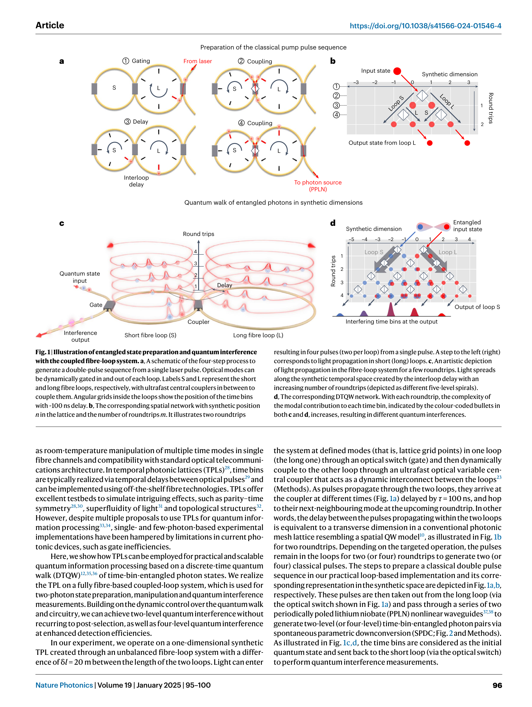

저자: Monika Monika, Farzam Nosrati, Agnes George, Stefania Sciara, Riza Fazili, André Luiz Marques Muniz, Арстан Бисянов, Rosario Lo Franco, William J. Munro, Mario Chemnitz, Ulf Peschel, Roberto Morandotti | 날짜: 2024-10-14 | DOI: 10.1038/s41566-024-01546-4

Fig. 1 | Illustration of entangled state preparation and quantum interference
Temporal photonic lattice 기반 coupled fiber-loop 시스템에서 time-bin-entangled photon pair의 discrete-time quantum walk를 구현하여 양자 상태 처리를 수행한다. 동적으로 제어 가능한 coupler를 통해 post-selection 없이 2-level과 4-level 양자 간섭을 달성한다.
총평: 본 논문은 temporal synthetic dimension을 활용한 양자 정보 처리의 실증적 돌파구를 제시하며, 동적 제어 가능한 fiber loop 기반 플랫폼으로 scalability와 robustness를 동시에 확보한 점에서 높은 실용성과 학술적 가치가 있다.